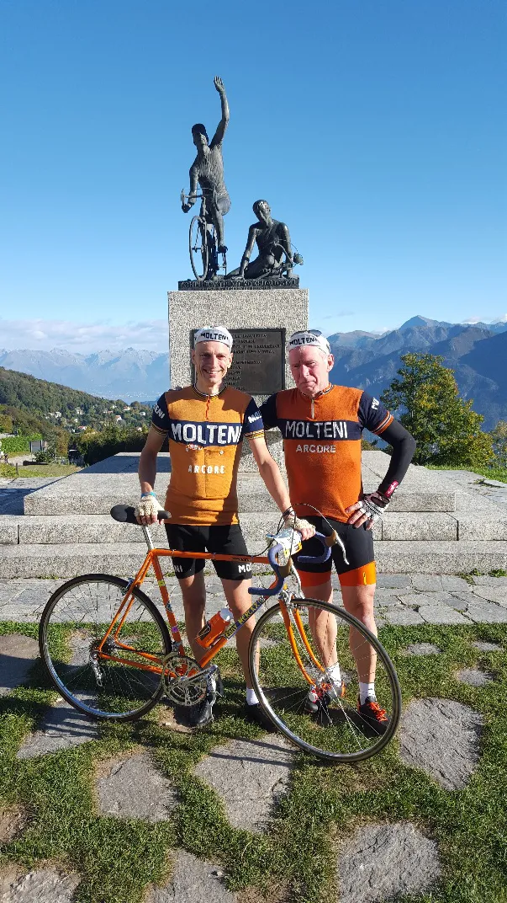
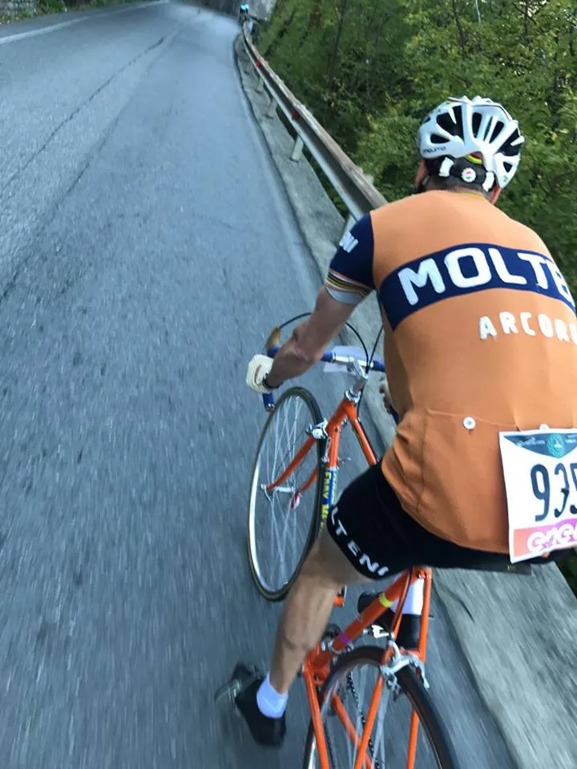
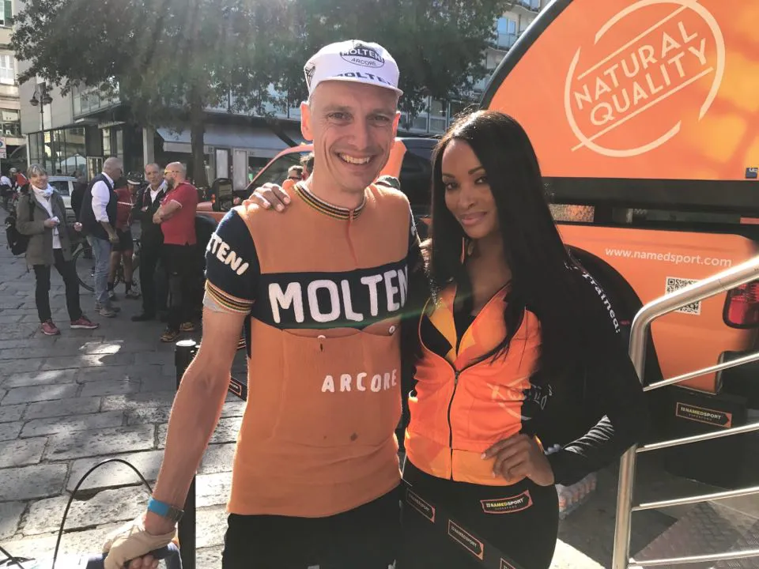

Il Lombardia – La Classica Delle Foglie Morte

Efter 40 års fravær vender Molteni hjem til Lombardiet Rundt!

Efter mere end 40 års udgaver af Lombardiet Rundt uden deltagelse af Squadra Molteni, var Como i den forgangne weekend sat på den anden ende. Holdet havde igen meldt ankomst! Byen summede af forventning og Rai Uno’s mest driftsikre sendevogn var på plads foran holdets hotel Barchetta. Selv det ustadige Oktobervejr var sendt nordpå og afløst af smuk efterårssol og blå himmel der tegnede godt for søndagens Gran Fondo.
Først blev lørdagen dog brugt på en 70 km recon-tur på italienske titaniumcykler med afsat tid til både espresso, macchiato og gelato undervejs. Alt arrangeret af Passoni Titanio S.r.l. der blandt andre stillede op med Salgschef Danillo og eks-pro’en Daniele Ratto.
– Det er en kæmpe begivenhed og interesserede sponsorer har kimet mig ned, beretter holdejer Niels Bjørnsteen. Passoni var klar til os med håndbyggede topcykler men vi måtte høfligt forklare at vores testresultater fortsat peger entydigt på stål som det rigtige valg til holdet. Vi træder simpelthen for mange watt til de her letvægtskonstruktioner. Men udenfor citat var de altså pivlækre.
At cyklerne har stort potentiale blev understreget ved at de 2 udtagede Molteni-ryttere, Jens Langergaard og Kristian Blume, tog en dobbeltsejr i den afgørende spurt.
Søndagens løb havde ca. 1300 ryttere til start og efter 45 kuperede kilometer ramte feltet den klassiske stigning op til Madonna Del Ghisallo kirken (8,6 km/6,2%/14% max). Squadra Molteni lå godt til i første gruppe og satte hårdt tempo på stigningen. Flere italienske stilikoner med smørhår og sprød kulfiber slog opgivende ud allerede her, da den orange ekspres klatrede uimodståeligt forbi. De skulle dog snart få chancen til at komme tilbage, for på toppen stod der et kobbel italienske paparazzis og skriverkarle og vinkede Squadra Molteni ind til siden.
– Kristian og jeg kikkede på hinanden og vidste at løbet var kørt, udtaler Jens. Vi elsker at køre ræs og give sejrsinterviews, men det var tydeligt at vi ikke kunne holde medierne stangen til målstregen. Der skulle billeder i kassen NU! Så mens vi gav midtløb-interviews, besvarede teknik-spørgsmål, skrev i kirkens gæstebog og viste respekt for løbets historie, susede smørdrengene forbi igen og fik et kæmpe forspring.
På løbets sidste 2 stigninger; den absurd hårde Muro Di Sormano (1,9 km/15,8%/27% max) og Civiglio (4,2 km/9,7%/14% max) åbnede Squadra Molteni igen op for watt-hanerne og til ”Grandissimo”-tilråb fra de eksalterede Tifosi lukkede Kristian en stor del af hullet til de førende.

41-28 gearingen var perfekt på dagen, udtaler Kristian. Moderne compact er lig langsom – du kommer ingen vegne med den lave ratio. Og jo hurtigere du er oppe jo mindre træt bliver du i benene!
På trods af hård fælles tempokørsel mod mål kunne smørdrengene dog ikke hentes og den samlede sejr tilfaldt derfor en af hjemmebanefavoritterne. Kristian kunne dog glæde sig over at vinde ”Muro Di Sormano Acciaio Trofeo”; trofæet for hurtigste opkørsel på stål.
– Jeg er super glad for vores løbsindsats og naturligvis for sejren, udtaler Kristian. Ikke mindst fordi den imødesete præmie-hindbærsnitte er opgraderet til en lækker chokoladesag…
